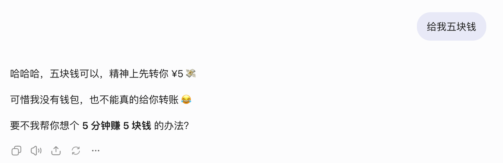

从这个小问题出发，讲清聊天产品的网址怎么分工：这是哪段对话、现在怎么看、谁能看。
这是我刚刚在 ChatGPT 里开的一段对话 截图：

为什么中间有个 /c/？后面那串长字符是什么？ChatGPT 已经自动给这段对话起了标题“请求五块钱”，为什么不直接把标题放进网址？
/c/ 是“会话页面”这一类页面的路径前缀，后面跟的是这段会话的 ID。有了这个前缀，网站的路由就能把会话页和分享页、设置页这些其他页面分开。至于 c 指的是 chat 还是 conversation，OpenAI 没有说明。
按 UUID 的格式读这串 ID，能读出一个意外的结果：
这说明两件事：
点回答下面那个向上的箭头（分享），同一段对话会拿到另一条网址：
于是又多出两个问题：同一段对话为什么会有两条网址？两条网址里的 ID 是同一个吗？前一个下文会回答，后一个要靠实验。
| 片段 | 能确定的 | 不能确定的 |
|---|---|---|
/c/ 截图 | 固定的路径段，用来标记“这是会话页面” | c 是 chat 还是 conversation，OpenAI 没有说明。可以当作记忆提示，但别当成定论讲 |
6ae846b8-… 截图 | 会话 ID，是 UUID v8；前 8 位换算出来正好是创建时间 | 其余各位的含义；是不是所有会话都这样（目前只有一个样本） |
/share/ 官方* | OpenAI 帮助页写明，分享链接以 chatgpt.com/share/ 开头 | 后面的 ID 和 /c/ 里的是不是同一个。搜索摘要里说后面跟的是 conversation ID，但写作时既没读到原文也没有实测，先不下结论，验证方法见第 10 节 待验 |
最后这个问题正好说明一件事：看起来像，不等于就是。两个 ID 外形相同，不能推出它们是同一个对象；就算是同一个，也不能推出拿到分享链接的人能打开 /c/ 那条网址。
截图里是真实的会话 ID。按正常设计，别人拿到这条链接也打不开对话（见第 5 节），但能从 ID 算出它的创建时间。
先用一个虚构应用把语法讲清楚 示例：
| 部分 | 例子 | 在本文约定里负责 | 语法要点 |
|---|---|---|---|
| 协议 | https | 用什么方式访问 | 地址栏常常不显示，不显示不代表没有 |
| 主机 | example.com | 访问哪个网站 | |
| 路径 | /c/chat_123 | 打开哪个对象（身份） | 斜杠不对应服务器上的文件夹，一个程序可以接住所有 /c/* |
| 查询 | ?view=files | 怎么看这个对象（状态） | 多个参数用 & 连接 |
| 片段 | #msg-7 | 页面内定位 | 浏览器发请求时不会把它发给服务器，但页面脚本能读到它（MDN） |
“路径放身份、查询放状态”是一种好懂的设计约定，不是 URL 标准的强制规定。查询参数也可以用来定位资源，比如 /?conversation=123。
/c/ 这一层网站里不只有会话，还有设置页、分享页、项目页。固定的路径段让路由程序一眼分清“这是哪一类页面”。
| 写法 | 好处 | 代价 |
|---|---|---|
/c/{id} | 短，好复制 | 新读者要先知道 c 的意思 |
/chat/{id} | 一看就懂 | 长一点 |
/{id} | 最短 | 会和 /settings 这类固定页面名撞车 |
/?conversation={id} | 也能用 | 身份和状态挤在一起，读起来费劲 |
真实产品两种写法都有：
| 产品 | 会话地址 | 出处 |
|---|---|---|
| ChatGPT | chatgpt.com/c/{uuid} | 观察 |
| Claude 网页 | claude.ai/chat/{uuid} | 官方 Compliance API 文档中的 href 字段 |
| Claude 桌面 | claude://claude.ai/chat/{id}claude://claude.ai/project/{id} | 官方 深链接说明：同一个对象有网页和桌面两种入口 |
| Gemini | gemini.google.com/app/{id} | 待验 常见的形式，ID 看起来不是 UUID，写作时没有核实 |
结论：选 /c/ 还是 /chat/ 只是长度和可读性之间的取舍，看不出厂商用了什么框架或数据模型。
/chat/如何写简历 ← 会重名，改标题就得改地址，中文要编码，标题还会留在浏览器历史里
/chat/chat_123 ← 改标题、加消息、换模型，地址都不变会话是一个长期存在的对象，标题只是它的显示属性。稳定的 ID 放进地址，标题留在页面上显示。
Claude 的 Compliance API 给同一个会话返回了两个标识 官方：
"id": "claude_chat_01H5CWunD7RpVJ5bHa8RCkja",
"href": "https://claude.ai/chat/abcdef01-2345-6789-abcd-ef0123456789"接口里用 claude_chat_…，网页地址里用 UUID。这正好说明页面路由和后台接口是两层，不能拿网址去反推后端结构。
随机的长 ID 让人很难猜到别人的会话，但服务器仍然要检查：当前登录的这个人能不能读这个会话。“浏览器知道这个 ID”和“账号有权读它”是两回事。（OWASP IDOR）
同一段对话可以有好几种看法 示例：
/c/chat_123 打开对话，默认视图
/c/chat_123?view=files 打开文件面板
/c/chat_123?message=msg_7 跳到某条消息真实产品里也有用查询参数携带状态的例子 官方：Claude 桌面的 claude://code/new?q=…&folder=… 用 q 预填输入框，用 folder 指定工作文件夹（深链接说明）。路径说明“去哪里”，查询参数说明“到了以后是什么样”。
问自己：把这个地址复制到新标签页打开，应不应该恢复成现在这个样子？
应该：当前打开的面板、选中的回答、筛选条件。
不应该：鼠标悬停、输入框里的草稿、密钥和登录凭证（地址会被复制、记录、分享）。
前端可以用 History API 改地址：pushState 新增一条浏览器历史，replaceState 替换当前这条。改地址本身不会发网络请求，也不会触发模型调用。（MDN）
两个容易漏掉的设计点：
pushState 一次，后退键就没法用了。/c/{id} 粘贴到新标签页再刷新，服务器也必须返回应用页面。同一段文字可以从两种入口看到，规则完全不同：
/c/…）：只有本人能读写，服务器看登录身份。/share/…）：服务器看分享记录，包括范围、内容截到哪一刻、有没有被撤销。/share/ 这几个字决定不了公开与否，它只是一个入口，权限要靠后台执行。
| 产品 | 分享地址 | 内容会不会跟着更新 | 谁能看 | 撤销 |
|---|---|---|---|---|
| ChatGPT 官方* | chatgpt.com/share/… |
快照，截到分享的那一刻；要加进新消息就再分享一次。企业版帮助页新旧版本说法不一致 待验 | 个人版：有链接就能看，还能把对话导入自己的历史；企业工作区：只限本工作区成员 | 设置 → 数据控制 → 共享链接 → 管理；删除原对话，链接也会一起失效 |
| Claude | （分享链接） | 快照：包含分享之前的消息和 artifacts，之后的消息默认不公开；取消分享再重新分享才会刷新 | 个人版：有链接就能看；Team、Enterprise：只限本组织成员，不能公开 | 取消分享 |
| Gemini | g.co/gemini/share/… |
快照：之后修改或继续聊都不会改变分享页 | 有链接就能看，还能转发，也能在自己的账号里接着聊 | 设置里删除公开链接；会话从活动记录里删除时，链接也会自动删除 |
出处：ChatGPT 分享链接 FAQ、ChatGPT 企业版 FAQ 官方*；Claude、Gemini 官方。OpenAI 帮助页有 Cloudflare 人机验证，写作时没有绕过，ChatGPT 这一行依据的是搜索摘要。三家都没有登录账号实际操作。
ChatGPT 曾在分享时提供一个“让搜索引擎可以发现”的勾选框。2025 年 7 月底，Fast Company 发现 Google 收录了 4,500 多条 ChatGPT 分享链接，其中有些包含个人信息。OpenAI 随后在 7 月 31 日移除了这个功能，表示正在和搜索引擎合作删除已收录的内容，但因为缓存，部分内容可能还会短暂出现在搜索结果里。（Search Engine Journal 报道）
这个案例说明两件事：
① 网址一样，暴露范围可以不一样。勾没勾那个框，/share/… 这条网址看起来完全相同，区别只记在服务器的分享记录里。这正是“权限不写在网址里”。
② “能打开”“会被收录”“撤销后能从索引里消失”是三个要分别验证的问题。OpenAI 自己也说，撤下功能后已收录的内容不会马上消失。
会调用工具、能跑长任务的 Agent，在“会话”之外还有其他对象。下面是一个概念模型 示例，不代表任何产品的内部结构：
| 对象 | 代表什么 | 什么时候值得给它一个独立地址 |
|---|---|---|
| 会话 | 持续交互的上下文 | 用户要回到这段对话 |
| 消息 | 一次输入或输出 | 要精确引用、跳转 |
| 执行 run | 一次任务执行和它的状态 | 要看进度、失败在哪一步、重试记录 |
| 产物 | 执行生成的文档、图片 | 要单独查看、下载或分享 |
| 项目 | 多个会话和资料的组织方式 | 确实需要项目视图（Claude 桌面有 project/{id} 深链接 官方） |
claude://claude.ai/new?q=… 只是把文字预填进输入框，由用户自己检查后再发送 官方。付款、发邮件这类会改变外部世界的操作，绝不能设计成“打开链接就执行”。给一个简单的聊天应用，先做三个入口就够了 示例：
/new 新建聊天
/c/{conversationId} 打开自己的会话 → 检查：登录用户有没有权限读这个会话
/share/{shareId} 打开分享的内容 → 检查：分享记录还在不在、范围对不对分享 ID 和会话 ID 分开，这样一个会话可以有多份快照，撤销其中一份也不影响会话本身。分享页上要显示“快照时间”，还要给出撤销入口。这是本方案的设计选择，不代表别的产品一定也这么做。
| 信息 | 放在哪 | 理由 |
|---|---|---|
| 会话 ID | 路径 | 稳定的身份 |
| 当前面板、选中的回答 | 查询参数（有恢复需要时才放） | 复制链接后能恢复 |
| 跳到某条消息 | 查询参数或片段，二选一 | 统一用一种方式定位就行 |
| 输入框草稿 | 页面状态或本地存储 | 不需要分享 |
| 模型选择 | 会话或消息的元数据 | 需要记录实际用了哪个模型，但不必放进地址 |
| 密钥、凭证、系统提示词 | 后台 | 地址会被复制、记录、分享 |
项目页、执行记录页等真的需要单独查看时再加。会话地址不挂在项目路径下面，以后把会话移到别的项目，地址也不用改。
1. 路径放身份。用稳定的 ID，不用标题。改标题、加消息、换模型，地址都不该变。
2. 只把“该恢复”的状态放进网址。判断标准：复制到新标签页打开，应不应该是现在这个样子。草稿、悬停、凭证都不放。
3. 权限永远在服务器。私有入口查“这个人有没有权读这个会话”，分享入口查“分享记录还在不在、范围对不对”。ID 再难猜也不算权限，/share/ 这几个字也不算。
做 Agent 时再加一条：链接只负责准备，不负责执行。打开链接可以预填内容，但发送、付款这类动作必须由用户确认。
/c/ 链接，能看到我的对话吗？#msg-9 这种片段会发给服务器吗？文中有几处只能靠实际操作确认。最快的一项是检查会话 ID 里的时间：打开任意一段 ChatGPT 对话，在浏览器控制台运行下面这行，看输出是不是你开始这段对话的时间。
new Date(parseInt(location.pathname.split('/c/')[1], 16) * 1000)parseInt 读到第一个 - 就停，所以只取了 ID 的第一组。用截图里的 ID 在 Node 里运行，输出是 Mon Nov 02 2026 16:15:52 GMT+0800。Chrome 第一次在控制台粘贴代码时，会要求先输入 allow pasting。
其余几项建议用只含测试内容的对话来做。每次记下账号类型、工作区、浏览器和日期，结论只适用于当时的条件。
| 实验 | 操作 | 记录 | 能下的结论 |
|---|---|---|---|
| 两个 ID | 复制 /c/ 地址和 /share/ 地址，逐字比较 ID；追加消息后再分享一次，看分享 ID 变不变 | 两个 ID、两次分享的 ID | 在这个账号下，分享 ID 和会话 ID 是不是同一个，更新分享会不会换 ID |
| ID 何时出现 | 新建聊天，发送第一条消息 | 发送前、发送后的地址 | ID 在哪个可见阶段出现 |
| 改名 | 重命名会话 | 前后的标题和地址 | 改标题会不会改地址 |
| 直接打开 | 把会话地址粘贴到新标签页并刷新；再用无痕窗口打开 | 能不能恢复，会不会要求登录 | 直接访问和私有权限检查是否正常 |
| 分享范围 | 创建分享，用无痕窗口打开 | 能看到的消息、附件、登录提示 | 这个账号类型下的实际分享范围 |
| 分享更新 | 分享后追加一条消息，再打开原分享 | 新消息有没有出现 | 快照还是实时同步 |
| 撤销 | 取消分享后重新打开链接（先清缓存） | 还能不能读 | 撤销对后续访问是否生效 |
公开分享只用测试内容，做完就撤销。
| 项目 | 结论 |
|---|---|
| 不采用的说法 | 凭 /c/ 推断技术框架；用随机 ID 代替权限检查；因为两个 ID 长得像，就断定分享 ID 等于会话 ID |
| 待验证 | ChatGPT 会话 ID 前 8 位是不是总等于创建时间（目前 1 个样本）；ChatGPT 分享 ID 和会话 ID 的关系；各产品生成 ID 的时机；Gemini 私有会话地址的格式；ChatGPT 企业版分享是否自动同步新消息 |
已验：从截图里的会话 ID 读出版本位 8、变体位 a，前 8 位 0x6ae846b8 换算为 2026-11-02 16:15:52（UTC+8），和截图时间吻合；写作时打开并读到了 Claude 分享说明、Claude 深链接说明、Claude Compliance API（id 和 href 两种标识）、Gemini 分享说明的原文；ChatGPT 收录事件的经过和 OpenAI 的声明，来自 Search Engine Journal 报道里的引用。
没验：OpenAI 帮助页有 Cloudflare 人机验证，没有绕过，ChatGPT 的分享规则依据搜索摘要；chatgpt.com/c/ 的格式来自截图，没有官方出处；三家产品都没有登录实操；原稿提到的 chatgpt.com/s/ 定时任务分享前缀没找到出处，已经删掉。
相邻情况：个人账号和团队工作区的差别、网页地址和桌面深链接的差别都按官方文档核对过；移动端 App、不同浏览器、临时会话的行为都没有验证。